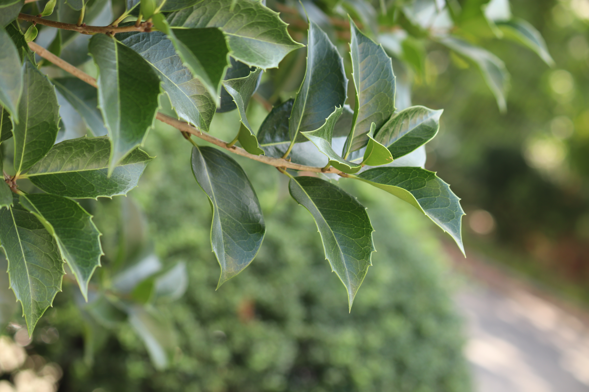

쌍떡잎식물 무환자나무목 감탕나무과
구골나무(
Csmanthus heterophyllus
)
“구글 나무 아닙니다, 구골나무에요~!”
상록성 떨기나무이고 줄기는 가지가 많이 갈라지고 연한 회갈색을 띤다. 잎은 마주나며, 두껍고 광택이 난다.
길이는 3-7cm, 폭 2-3cm
이다.
꽃은 잎겨드랑이에 모여 나고 지름 4-5mm, 흰색을 띠며, 향이 난다. 꽃받침잎은 4장이고 심형으로 가장자리는 밋밋하다.
열매는 핵과 타원형이며 흑자색이다.